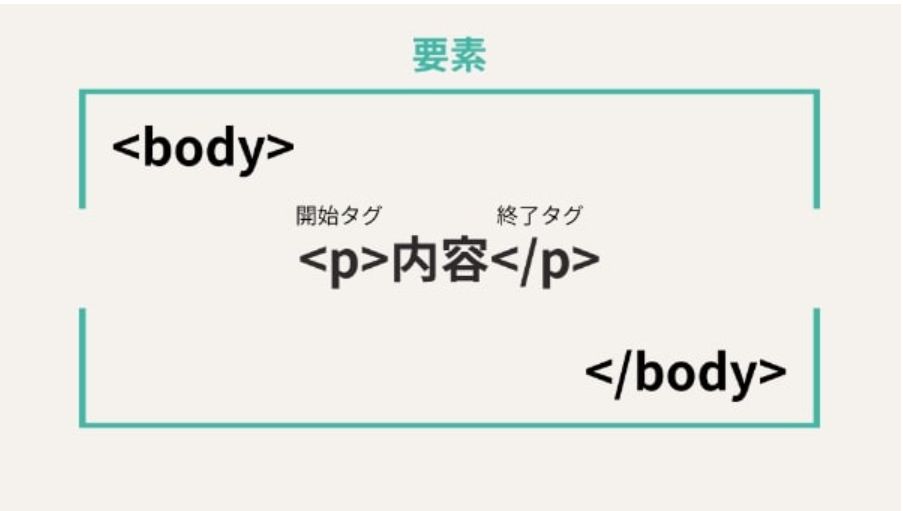

またマークアップ言語とは、Webページ内のテキスト情報の構成（タイトル・段落など）や役割をコンピュータが構造的に理解できるようにするための言語を意味する。
Htmlはタグ・要素・属性の3つで構成されており
タグ
タグとは、HTMLの記述に意味を与える印のこと。
タグによって、コンピュータはテキスト情報を表示する形式が理解できるようになる。
タグとは、HTMLの記述に意味を与える印のこと。
タグによって、コンピュータはテキスト情報を表示する形式が理解できるようになる。
要素
要素（element）とは、Webページを構成するテキスト情報のかたまりを指す用語のこと。
HTMLではWebページの中身が「head要素」と「body要素」の2つに大別され、 head要素にはコンピュータ向けの記述、body要素に実際にブラウザ表示させる記述をする。
要素（element）とは、Webページを構成するテキスト情報のかたまりを指す用語のこと。
HTMLではWebページの中身が「head要素」と「body要素」の2つに大別され、 head要素にはコンピュータ向けの記述、body要素に実際にブラウザ表示させる記述をする。

属性
属性（attribute）とは、個々のタグに特定の性質や動作を与える記述のこと。
下の図のaタグは他ページへのリンクを意味するタグである。そしてどのようなリンクなのか示すため、href属性を追加し、その中でリンク先の指定をする。
また複数の属性を記述することも可能で、例えばテキスト情報をリンク化させた上で、リンク先の開き方を指定するtarget属性を追加することができます。

属性（attribute）とは、個々のタグに特定の性質や動作を与える記述のこと。
下の図のaタグは他ページへのリンクを意味するタグである。そしてどのようなリンクなのか示すため、href属性を追加し、その中でリンク先の指定をする。
また複数の属性を記述することも可能で、例えばテキスト情報をリンク化させた上で、リンク先の開き方を指定するtarget属性を追加することができます。
Htmlは何種類かあり
- HTML4・・・古いHTMLの規格。現在は主に歴史的な位置づけ
- XHTM・・・HTMLをXMLの厳密なルールに従って書く規格
- HTML5・・・画像・動画などの機能が強化された規格。現在のHTMLの基礎
- 現在のHTML・・・WHATWGがHTML Living Standardとして継続的に更新している
最後に簡単にタグの紹介をする
-
タグ 役割 主な使い方
- h1〜h6 見出し 情報を階層的に整理する
- p 段落 文章をひとかたまりにする
- a リン 別のページへ移動する
- li リスト 項目箇条書きの項目を作る
- img 画像 画像を表示する
- table 表 情報を表形式で整理する
- div グループ化 要素をまとめて装飾する
- strong 重要性の強調 重要な文章を強調する
- style CSSの指定 HTMLのデザインを設定する
- hr 水平線 内容の区切りを示す